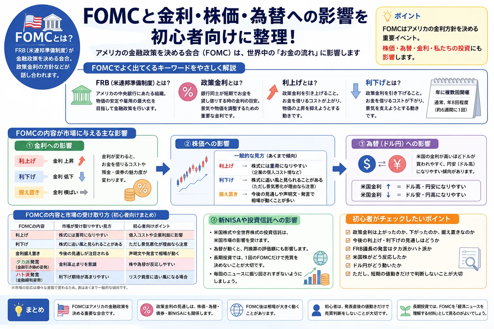

話題・トレンド
FOMCとは？なぜ世界中の投資家が注目するの？初心者向けに解説
経済ニュースで「FOMCを控えて株価が様子見」「FRBの利下げ観測で円安が進行」といった言葉を見ても、最初は意味が分かりにくいものです。この記事では、FOMCとは何か、なぜ株価・為替・金利・新NISAに関係するのかを、投資初心者向けにやさしく整理します。

Basic
FOMCとは？まずは意味をやさしく解説
FOMCとは、アメリカの金融政策を話し合う重要な会合です。アメリカの中央銀行にあたるFRBが開き、政策金利の方針や景気・物価の見通しなどが注目されます。
FOMC
アメリカの金融政策を決める重要会合
日本でいう日銀の金融政策決定会合に近い位置づけです。世界最大級の米国経済に関わるため、世界中の投資家が注目します。
開催
年に複数回開かれる
FOMCは定期的に開催され、発表内容やFRB議長の会見をきっかけに、株価や為替が大きく動くことがあります。
覚え方
アメリカの金利方針を決める重要イベント
まずは「FOMC＝アメリカの金利方針を決める重要イベント」と覚えると、ニュースを理解しやすくなります。
Terms
FRB・政策金利・利上げ・利下げとは？
FOMCのニュースでは、FRB、政策金利、利上げ、利下げという言葉がよく出てきます。難しく見えますが、初心者は「お金を借りるコストが変わる話」と考えると理解しやすくなります。
FRBとは
FRBは、アメリカの中央銀行にあたる組織です。物価や雇用、金融システムの安定などを見ながら金融政策を行います。
政策金利とは
景気や物価を調整するための重要な金利です。政策金利の方向性は、企業の借入コストや投資家のお金の置き場所に影響します。
利上げとは
金利を上げて、お金を借りるコストを高くする動きです。物価上昇を抑える目的で行われることがあります。
利下げとは
金利を下げて、お金を借りやすくする動きです。景気を支える材料として見られることがあります。
Stock Market
なぜFOMCで株価が動くの？
株価は企業業績だけでなく、金利の見通しにも反応します。金利が上がると企業の借入コストが増えやすく、投資家が株式より債券や預金を選びやすくなることがあります。一方で、利下げ期待が強まると株式市場に追い風として見られることもあります。
- 利下げ期待は株式市場にプラス材料として見られることがあります。
- ただし、景気悪化が理由の利下げは株価にマイナスになる場合もあります。
- 「利下げ＝必ず株高」「利上げ＝必ず株安」と単純に決めつけないことが大切です。
| FOMCの内容 | 市場が受け取りやすい見方 | 初心者向けポイント |
|---|---|---|
| 利上げ | 株式には重荷になりやすい | 借入コストや企業利益に影響します |
| 利下げ | 株式に追い風と見られることがある | ただし景気悪化が理由なら注意が必要です |
| 金利据え置き | 今後の見通しが注目される | 声明文やFRB議長の発言で相場が動くことがあります |
| タカ派発言 | 金利高止まりを意識 | 株や為替が反応しやすくなります |
| ハト派発言 | 利下げ期待が高まりやすい | リスク資産に追い風になる場合があります |
※ 横にスクロールできます
Currency
FOMCは為替・円安にも関係する
FOMCはドル円などの為替にも影響します。米国の金利が高いと、相対的にドルを持つ魅力が意識されやすくなります。日本との金利差が注目されると、円安・ドル高につながることがあります。
米国金利が高いとドルが買われやすいことがある
金利が高い通貨は、金利収入を期待する投資家に選ばれやすくなることがあります。そのため、FOMC後に米国金利の見通しが変わると、ドル円が大きく動くことがあります。
円安は生活にも投資にも影響する
円安は輸入品価格、海外旅行費用、外貨建て資産の円換算評価額に影響します。新NISAで海外資産に投資している場合も、為替の動きが評価額に関係します。
為替は金利だけで決まらない
為替は金利差だけでなく、景気、政治、地政学リスク、投資家心理などでも動きます。FOMCだけを見て為替の方向を決めつけないことが大切です。
NISA
FOMCは新NISAや投資信託にも影響する？
新NISAで米国株式や全世界株式の投資信託を持っている人にも、FOMCは間接的に関係します。米国株式市場が動くと投資信託の基準価額に影響し、為替が動くと円換算の評価額にも影響するためです。
米国株式市場
FOMC後に米国株が大きく動くと、米国株式に投資する投資信託の基準価額にも影響することがあります。
為替
海外資産は円換算で評価されるため、ドル円などの為替変動も投資信託の評価額に影響します。
長期投資
長期投資では、1回のFOMCだけで売買を決めるより、投資方針を守ることが大切です。
Check
FOMCで初心者がチェックしたいポイント
FOMCニュースを見るときは、細かい専門用語を全部覚えるより、次のようなポイントを順番に確認すると理解しやすくなります。
- 政策金利は上がったのか、下がったのか、据え置きなのか
まずは結果を確認します。予想通りか、予想外だったかも重要です。
- 今後の利下げ・利上げ見通しはどうか
相場は現在の結果だけでなく、今後の見通しにも反応します。
- FRB議長の発言はタカ派かハト派か
金利を高めに保ちそうならタカ派、利下げに前向きならハト派と表現されることがあります。
- 米国株とドル円がどう反応したか
株価と為替の両方を見ると、投資家がどう受け止めたかをつかみやすくなります。
- 短期の値動きだけで判断しない
発表直後は値動きが荒くなることがあります。初心者は慌てて売買しない姿勢が大切です。
Caution
FOMCニュースで初心者が避けたい行動
FOMCは重要なイベントですが、初心者が短期の値動きだけを見て判断すると、かえってリスクが大きくなることがあります。
- 発表直後の値動きだけを見て慌てて売買する
- 「利下げ＝必ず株高」と単純に考える
- SNSの短い投稿だけで判断する
- FXで大きなレバレッジをかける
- 新NISAの長期投資を短期ニュースでやめてしまう
FOMCは相場を読むための材料のひとつです。投資方針、資金管理、リスク許容度を無視して、ニュースだけで売買を決める必要はありません。
Related
あわせて読みたい関連記事
FOMCを理解するには、金利・為替・株価・長期投資の基本もあわせて読むと整理しやすくなります。
FAQ
よくある質問
Q. FOMCとは簡単にいうと何ですか？
A. アメリカの金融政策を決める重要な会合です。政策金利の方針が話し合われるため、株価や為替に影響することがあります。
Q. FOMCは日本株にも関係ありますか？
A. 関係します。米国株や為替が動くと、日本株にも影響が及ぶことがあります。特に輸出企業や金利に敏感な銘柄は注目されやすいです。
Q. FOMCで利下げされると株価は上がりますか？
A. 上がることもありますが、必ずではありません。景気悪化が理由の利下げであれば、株価にマイナスに働く場合もあります。
Q. 新NISAをしている人もFOMCを見るべきですか？
A. 米国株式や全世界株式の投資信託を保有している場合、間接的に影響を受けます。ただし、長期投資では1回のFOMCだけで判断しないことが大切です。
Q. FOMC発表後にFXを始めれば儲かりますか？
A. そうとは限りません。FOMC後は為替が大きく動くことがあり、レバレッジを使うFXでは損失も大きくなる可能性があります。
まとめ
FOMCは売買サインではなく、経済ニュースを理解する材料として見る
FOMCは、アメリカの金融政策を決める重要会合です。政策金利の見通しは、株価・為替・債券・新NISAにも関係します。発表後は相場が大きく動くことがありますが、初心者は発表直後の値動きだけで売買判断をしないことが大切です。長期投資では、FOMCを「経済ニュースを理解する材料」として見ると、相場との距離感を保ちやすくなります。
ご利用にあたっての注意事項
本記事は情報提供を目的としており、投資の勧誘や特定の銘柄・通貨・投資信託・金融商品の売買を推奨するものではありません。株式・投資信託・外国証券・FX等の取引は元本保証がなく、相場変動や為替変動などにより損失が生じる場合があります。取引開始前に、契約締結前交付書面や商品説明書、目論見書等を必ず確認し、最終的な判断はご自身の責任で行ってください。